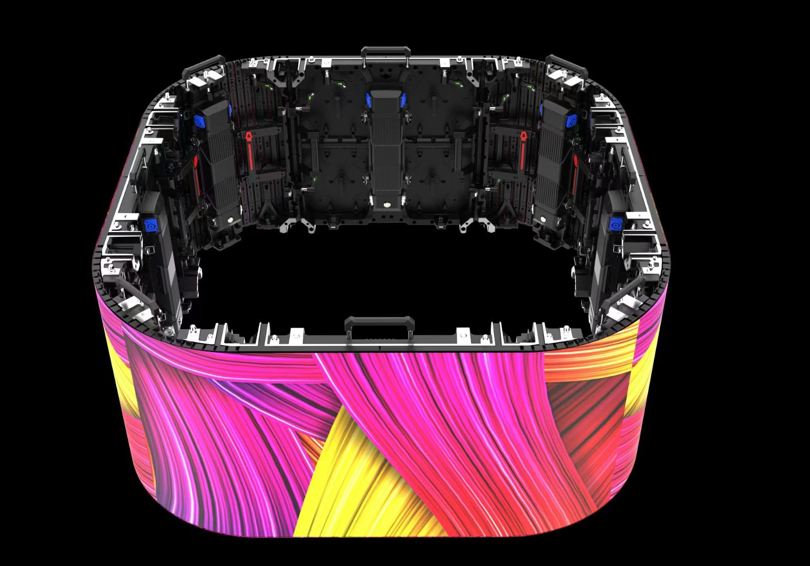

By Cassie
What does a US LED display importer need to know? Importing LED displays into the United States requires a customs entry filed with CBP, confirmation of FCC and safety listing compliance, and a landed cost model that accounts for duty plus tariffs. This 2026 guide explains each step.
The United States is the largest single market for professional LED displays, and it is also one of the most formal to import into. Entries are filed with Customs and Border Protection, product compliance obligations attach to the goods themselves, and the tariff position has changed repeatedly in recent years.
A US LED display importer who prepares the compliance file and confirms the tariff treatment before ordering avoids the two most common problems: a shipment held for a compliance question and a duty assessment that was not in the budget.
Goods entering the United States are cleared through a customs entry filed with Customs and Border Protection. The importer of record needs a customs bond, a tax identification number, and a broker or self-filing capability.
The importer of record carries the legal responsibility for the entry, even when a broker files it. That means the classification, the declared value, and the origin are the importer's to defend, so the compliance file must be assembled on the buyer's side.
| Step | What Is Required | Who Handles It |
|---|---|---|
| Customs bond | Continuous or single entry bond | Importer |
| Importer number | Tax identification number | Importer |
| Entry filing | Entry summary with HTS codes | Broker or importer |
| Duty payment | Duty and fees at entry | Importer |
| Compliance evidence | FCC and safety documentation | Supplier, verified by importer |
| Record keeping | Entry records retained | Importer |
Classify each line separately. A complete screen, modules, power supplies, control cards, and mounting steel may each carry a different HTS code and a different duty rate. A single-code declaration for a mixed shipment invites a query and delays release.
Duty is calculated on the customs value using the Harmonized Tariff Schedule code. The rate depends on the code and the country of origin, and additional tariffs may apply to goods from certain origins. Because the position changes, the rate should be confirmed at the time of shipment.
| Cost Element | Basis | Notes |
|---|---|---|
| Customs duty | HTS code, value, and origin | Rate varies by code |
| Additional tariffs | Origin-based measures | Confirm the current position |
| Merchandise processing fee | Percentage of value | With minimum and maximum |
| Harbor maintenance fee | For ocean shipments | Percentage of value |
| Broker fee | Per entry | Varies by broker |
| Customs bond | Annual or per entry | Continuous bond suits frequent importers |
Duty is calculated on the customs value, which depends on the Incoterm agreed with the supplier. Under FOB the value excludes international freight and insurance, while under CIF it includes them. Agree the Incoterm in the purchase order, because it changes both the duty base and who arranges the freight.
Electronic products sold in the United States fall under FCC rules that govern radio frequency emissions, and LED displays and their control systems are included. Depending on the device, the obligation is verification, a declaration of conformity, or certification.
Safety listing is often required by the end customer even where federal law does not mandate it. Many commercial and public installations specify equipment listed by a recognised testing laboratory, so a US LED display importer should confirm the listing status before quoting a project.
| Requirement | What It Covers | Evidence to Hold |
|---|---|---|
| FCC rules | Radio frequency emissions | Verification or declaration |
| Safety listing | Electrical safety certification | Listing certificate for the model |
| Hazardous substances | Restricted material limits | Supplier declaration |
| Labeling | Product identification | Label artwork and content |
| Technical file | Supporting documentation | Datasheet, drawings, reports |
| Origin evidence | Country of origin | Manufacturer declaration |
Confirm the evidence relates to the exact model offered. A certificate for a similar product does not satisfy a specification that names a listing, and a mismatch discovered at commissioning is far more expensive than one found before the order.
Track the total landed cost per screen rather than the ex-works price alone. Freight, duty, additional tariffs, processing fees, brokerage, bond cost, and inland delivery all belong in the comparison.
Update the model after the first shipment using the actual invoices rather than the estimates. The first US import usually reveals charges that were not anticipated, and turning that experience into a better estimate is how a new importer becomes a confident one.
| Cost Element | Typical Share | Main Driver |
|---|---|---|
| Goods and freight | Largest share | Product and route |
| Duty and tariffs | Varies by origin | HTS code and trade measures |
| Processing and harbor fees | Small but fixed | Value and shipment mode |
| Brokerage and bond | Small but recurring | Entry frequency |
| Inland delivery | Varies by distance | Port to site |
| Installation | Depends on scope | Structure and access |
Confirm the tariff position at the time of each order rather than assuming an earlier rate still applies. Trade measures change, and a rate that applied last year may not apply to the next shipment.
Most importers work with a customs broker who files the entry and advises on classification. Choose a broker who understands electronic goods and can classify displays, power supplies, control cards, and steel separately, because each line carries its own treatment.
Give the broker the complete document pack before the goods arrive. A shipment that reaches the port with incomplete paperwork is held while the gap is filled, and demurrage and storage charges accumulate daily.
Confirm the importer of record for each shipment. Where a US distributor clears the goods, the distributor carries the compliance file, and the buyer should see that file rather than assume it exists.
The United States spans desert, tropical, and cold climates, and coastal sites add humidity and salt air. Power is generally 120 or 208 volts at 60 hertz, and the configuration should be confirmed for the site.
For US sites, low winter temperatures make cabinet construction and sealing the deciding factors — the X Series uses standard 500×500mm cabinets with front/rear service, and the COB EF outdoor series is sealed against snow-melt and moisture ingress.
| Condition | Risk | Specification Response |
|---|---|---|
| Desert heat in the southwest | Thermal shutdown | Higher temperature rating and derating plan |
| Northern winter cold | Thermal performance | Cold-rated components and cables |
| Coastal humidity and salt | Corrosion of connectors | Sealed cabinets and corrosion protection |
| Hurricane-exposed regions | Structural load | Engineered mounting and load review |
| Seismic zones | Structural load on large walls | Engineered mounting and review |
| Unstable supply at some sites | Driver damage | Power conditioning on site |
Confirm the voltage and frequency configuration in writing. A screen set for the wrong configuration will fail, and the correction is not always a simple change.
Ask every candidate the same questions and record the answers. For US projects the compliance evidence and the listing position matter as much as the price, because a screen without the right documentation cannot be installed in many commercial projects.
| Question | What a Strong Answer Looks Like | Warning Sign |
|---|---|---|
| FCC evidence | Declaration or verification supplied | Evidence promised later |
| Safety listing | Listing certificate for the offered model | Listing claimed without evidence |
| Voltage configuration | Confirmed in writing | Assumed rather than confirmed |
| Driver IC and power supply | Named brand and exact model | Brand only, no part number |
| Spare parts availability | Stated period in writing | No commitment given |
| Service response | Stated time by fault severity | Answer avoided |
Confirm the components in writing and require written approval for any substitution. Component shortages lead suppliers to change parts quietly, and the change only appears when the screens arrive.
Each mistake is inexpensive to avoid during planning and costly after the goods land. A US LED display importer who confirms the classification, models the landed cost, and assembles the compliance file avoids most of them.
Asia Vision Technology manufactures LED displays in Shenzhen and supplies importers, distributors, and contractors in the United States and worldwide. The factory produces the FCC and safety documentation US importers need, confirms the voltage configuration in writing, and holds spare parts for the stated warranty period.
For US projects the company supplies rental cabinets for events, fine pitch screens for corporate and retail work, and high-brightness outdoor displays for advertising. OEM and ODM production is available for distributors building their own range.